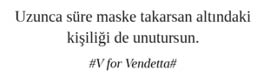

Misafirlik Öncesi
Tembih Süreci
Tembih süreci tamamlanıp gerekli mutabakatlar sağlanmadan misafirliğe gidilmez:
Profesyonel çiftler arasında: “Selam âşkım, Bade’lere mutlaka gitmeliyiz. Karı koca promote etmişler davet ediyorlar.”
Profesyonel anne babalar ve çocuklar arasında: “Olm sen de geliyorsun ve uslu duruyorsun. Gideceğimiz amcanın 17 direct report’u var.”
Ast ile üst arasında: “Tabii efendim mutlaka geliyoruz. Âli şirketimizin bekası için marabanın misafirliğe gelmesi vaciptir.”
“Hayvan gibi yeme! Hızlı yeme! Devamını isteme! Adamın verdiği aidat miktarını sorma! Ses sistemini kurcalama! Tuvalete sıçma, evden yapıp çık! Misafirlikte arkadaşlarınla doktorculuk oynama! Teyzelerin bacaklarına bakma! Yaşı ne olursa olsun ev sahibinin kızına yazma! Hal hatır soran herkese, ‘Çok iyiyim. Siz nasılsınız?’ de! Tuvalete girme, evde dönünce yaparsın! Ayağına çorap giy! Giydiğin çorapta delik olmasın! Eğilip kalkarken kıçını, başını, göğsünü usturupluca kapat!”
Sorgulama Süreci
“Ne olacak Beşiktaş’ın hali? Türkiye nereye gidiyor? Cari açık ne zaman kapanır? Emekli ve memur zamları ne olacak? Çağla Şikel-Emre Altuğ evliliği nereye gidiyor? Esra Erol bizim Osman’ı da everir mi?” muhabbetleri ile karşılaşır mıyım?
“Ya misafirler hazırladıklarımı beğenmezlerse?”
“Yiyeceklerden sonra espresso yapıp ikram etsem, gelenleri yeterince ezer miyim?”
“Dışarıdan sipariş verdiğimi kim anlayacak canım? Anlarlar mı dersin?”
“Yanıma ev ayakkabısı alsam, dalga geçerler mi?”
“Ya Recep’in beni aldatıp, evi terk ettiği konusu gündeme gelirse?”
“Ya, kızım ne zaman evleniyorsun sorusunu sorarlarsa?”
“Ya, oğlum ne zaman askere gidiyorsun derlerse?”
“Ya, kızınız bi oynasın da görelim derlerse?”
“Ya, oğlum çükünü göster derlerse?”
“Ya misafirlikteki diğer katılımcılarla uzuneşek, musluk suyu bükmece, zamana karşı eyeliner çekmece, maaş yarıştırmaca, bütçe yönetmece, dünyada gidilecek top 10 sushi restoranından bahsetmece, Michelin yıldızlı aşçıları saymaca, plates topu sektirmece gibi oyunlar oynamak zorunda kalırsam?”
Misafirlik Anı
“Irgat gibi ayakkabıları dışarıda çıkarmasana Süleyman. Premium bir siteye misafirliğe geldik.”
“Ne zahmet ettiniz? Ne gerek vardı hediye almaya?” derken iç ses “Allah’a şükür paketin ucunda değiştirme kartını gördüm, yoksa temizlikçi kadına vermek zorunda kalacaktım hediyeyi.”
İçeri doğru ilerlerken etrafa genel olarak göz gezdirerek: “Toz var mı? Dağınıklık var mı? Evde başka kim var? Malzemeleri kendi mi yaptı yoksa dışarıdan sipariş mi verdi?” gibi soruları iç ses düzeyinde konuşurken, “Bizden başka gelen var mı?” sorusunu sorarak gelecek diğer misafirler hakkında dedikodu süreci resmi olarak başlatılmış olur.
Misafir: “Güle güle oturun, çok güzelmiş eviniz. Kaç metrekare burası? Kaç arabalık otopark hakkınız var? Kapalı havuzu var mı? Café & Restaurant’ı var mı? Dünya mutfağına hâkim mi? Kuaförü var mı? Spor imkânları var mı? Personal trainer var mı? Evcil hayvanlarınız için gezi parkuru var mı? 7 / 24 residance hizmetleri mevcut mu? Bu ankastrelerin hangilerini siz aldınız, hangileri vardı? Giyinme odası var mı? Aşağıda size ait depo var mı? Çöpleri ne kadarda bir alıyorlar? Kirada mısınız, sizin mi? Ne kadar kirası? Satış fiyatı nedir?”
Ev Sahibi: \?#! / (½...
“Her gittikleri yerden magnet toplamışlar. Topladıkları magnetleri bi kombiye yapıştırmamışlar. Anladık anasını satayım, dünyanın her yerine gittiniz, çok iyisiniz.”
“Yu-ma-tu teyp görünümlü gergedan boynuzunu Güney Afrika’dan, bijon anahtarı görünümlü Hobo çantayı Hindistan seyahatimizden, Arı Maya uçurtması görünümlü yelpazeyi de Japonya’dan aldık, hepsinin derin anlamları ve bizim için özel hikâyeleri var.”
“Nazanlar sürekli geç kalırlar, sonra da kalkmak bilmezler.”
“Nalan’ın kocasının Zumba eğitimi vardı. Onu bekliyordur.”
Herkes yerini alır. Ev sahibi, tek tek herkesin hal hatır, sağlık durumlarını sormaya başlar. Standart hal hatır sorularından ziyade kişiselleştirilmiş soruları yöneltmek misafir ortamlarında ev sahibine büyük puan kazandırır:
“Nurtencim kocan promote edebildi mi? Hâlâ job evaluation mı bekliyorsunuz?”
“Pelincim mobbing için ethics line’ı aradın mı?”
“Remzicim Sudenaz’ı hangi oyun kulübüne yazdırdınız?”
İkram faslının başlama vuruşu, sehpaların çıkması ve misafirlerin önüne konması ile başlar. Sehpaların yerleşimini müteakip peçeteler ve çatal bıçak takımları çıkar sahneye. Çatal bıçak takımlarının özel kılıflardan çıkarılıp, misafirlere sunulması her zaman ekstra puanı garantiler. Misafirlerin mide gurultuları eşliğinde ikram tabakları da salona teşrif eder. Son olarak sahneye, beklenen assolist, ince belli kristal bardakta güzel demlenmiş çaylar çıkar. Çay ikram edilen tepside herhangi bir ıslaklık olması ev sahibinin puanında ciddi sıkıntılara yol açabilir. Mutlaka yanında özel bir tabakta limon ikram edilir. Limonlar itina ile bir bardağa atılacak şekilde dilimlenir ve limon çatalı ile servis edilir.
Çaylar sürekli takip edilir. Misafirler çay kaşıklarını bardaklarının üzerine yatık bir şekilde koyana kadar çayı bitenin hızlıca çayı yenilenir. Çay takibinde nitelikli gözlem ve seri hareket iyi puan getirir.
“Macaron, cup cake, salata ile karın mı doyar lan? Yok muydu bi yaprak sarması / kısır / ıslak kek / kol böreği / patates salatası / mozaik pasta / poğaça / mercimek köftesi aç kalacaz valla.”
Tuvalete gireceğim ama: “Osurursam duyulursa? Tuvaleti temizleyecek aparat yok ise? Aparat mevcut ancak halen malzeme (otuz kere sifon çekmeme rağmen) orada kalmak için inat ederse? Otuz kere sifon çekince, yuhh herif amma yapmış gibi geribildirim çığlıkları salondakilerin zihin haritalarında belirirse? Tuvalet kâğıdı yok ise? Çıkma süresinin gecikmesi, ev sahibinin o esnada çay koyması, soğuması sonra da ‘yuhh ben çay koydum ama ancak çıktın, neyse şimdi tazelerim’ zihniyeti olursa?” Yok girmem kalsın, dayanayım.
Misafirlik Sonrası
“Gönül’e çok uyuz oldum, kendi kocasına bakmadan millete bok atıyor.”
“O evi nasıl aldılar acaba çok merak ettim? Kocasının ne iş yaptığı belli değil?”
“Büşra’nın çorabını gördün mü? Kafam kadar kaçmış farkında değil pasaklı.”
“Hamide kadar patavatsızını görmedim.”
“İkram olmamış, resmen aç kaldık. Bi de her şeyi dışarıdan söylemiş.”
“Bizim çocuk almasın diye kumandayı saklaması gözümden kaçmadı.”
“Çocukların elindeki boya kalemlerini bile almış, sağı solu boyamasınlar diye.”
“Naz’ın çocuğunda kesin bir sıkıntı var. Doktora götürmeleri lazım. Bizimkinin kolunu ısırmış. Güya saat yapmış. Mosmor olmuş çocuğun kolu. Annesi de hiçbir şey demiyor.”
Profesyonel misafirlik ortamları, herkesin kartvizitini maske olarak taktığı ve maskesinin ardından ilişki kurduğu, sanal niyetlerle tetiklenmiş samimiyetlerin kartonpiyer ritüellere gebe, tarifsiz cinnetidir.
